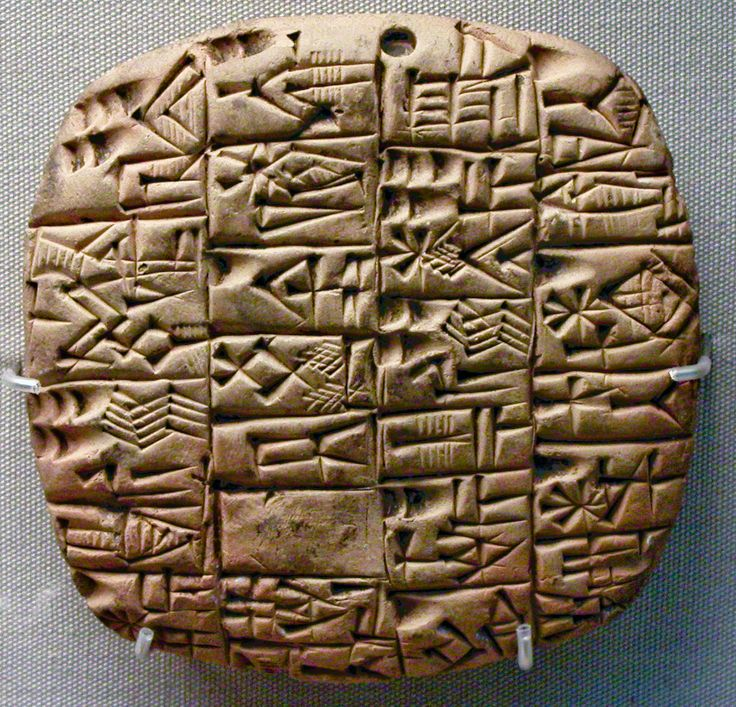
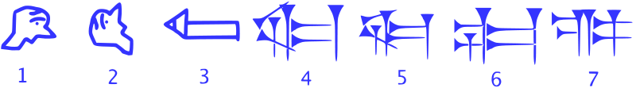

History of Writing
In the history of the representation of language through graphic means,
various human civilizations have evolved.
True writing, in which the content is coded so that another reader can reconstruct the exact written content with some precision, is a later development.
One of the earliest forms the written expression is cuneiform.
Cuneiform Script (in German: Keilschrift) 
The cuneiform system has been used for more than three millennia
through several stages of development, from the 34th century BC Until the 2nd century AD.
Eventually, it was completely replaced by alphabetic writing (in the general sense)
in the course of Roman times.
There are no cuneiform systems in current use.
It had to be deciphered as a completely unknown writing system in 19th-century Assyriology.
Successful completion of its deciphering is dated to 1857.
The cuneiform script underwent considerable changes over a period of more than two millennia.
The image below shows the development of the sign SAG "head" (Borger nr. 184, U+12295 𒊕).
Evolution of the cuneiform sign SAG "head", 3000–1000 BC

Stages:
shows the pictogram as it was drawn around 3000 BC
shows the rotated pictogram as written around 2800 BC
shows the abstracted glyph in archaic monumental inscriptions, from c. 2600 BC
is the sign as written in clay, contemporary to stage 3
represents the late 3rd millennium
represents Old Assyrian ductus of the early 2nd millennium, as adopted into Hittite
is the simplified sign as written by Assyrian scribes in the early 1st millennium and until the script's extinction.